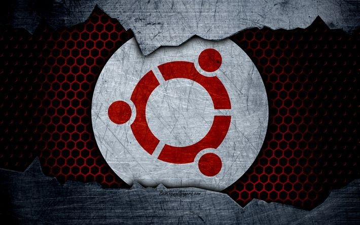

El sistema operativo Ubuntu no es más que una distribución de código abierto basada en Debian, otro sistema operativo, cuyo punto común es Linux, la madre de todos los software gratuitos que actúan como sistemas operativos en los ordenadores de medio mundo. La empresa responsable de su creación y de su mantenimiento, actualizaciones y desarrollo de nuevas versiones incluidas, es Canonical, fundada por el empresario sudafricano Mark Shuttleworth.
